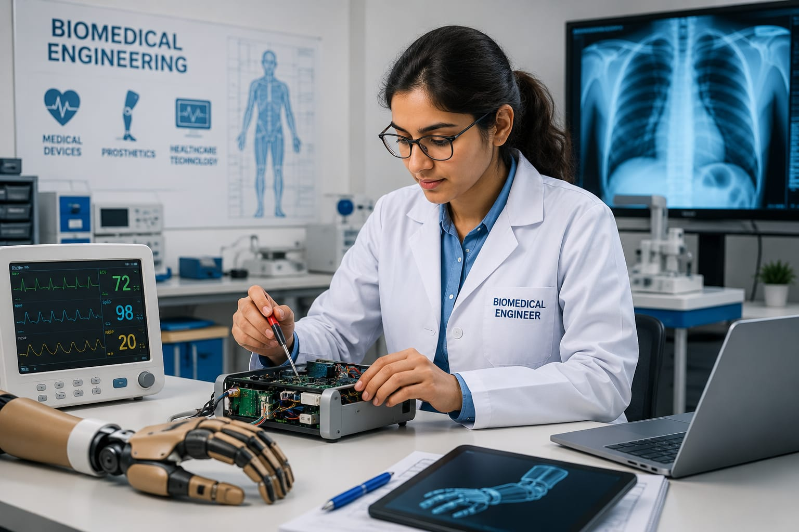

- When you visit a hospital, you may have seen machines like heart monitors, scanners, or X-ray machines.
- These devices help doctors understand what is happening inside the body and treat patients better.
- Have you ever wondered who designs these machines?
- In companies and research centers, there are people who design and develop these machines.
- The person who creates and improves such medical devices is called a Biomedical Engineer.
- 👉 In simple words: Biomedical Engineers design machines and devices that help doctors treat patients.
Biomedical Engineer
🧑🎨 What Do They Do?

🎓 How to Become a Biomedical Engineer
These diploma courses help students learn medical equipment, hospital technologies, biomedical devices, and healthcare engineering systems.
Diploma in Biomedical Engineering
Duration: 3 Years
Eligibility: 10th Pass with Science and Mathematics (Minimum 35%–50% marks)
Entrance Exam: State Polytechnic Entrance Exams
Diploma in Medical Electronics Engineering
Duration: 3 Years
Eligibility: 10th Pass with Science and Mathematics (Minimum 35%–50% marks)
Entrance Exam: State Polytechnic Entrance Exams
Note: Students who complete these diploma programs can work with medical equipment, hospital technology systems, healthcare device maintenance, and biomedical laboratories, or continue higher studies in Biomedical Engineering.
These degree programs help students learn medical devices, healthcare technology, biomedical systems, and medical equipment design.
B.Tech / B.E. in Biomedical Engineering
Duration: 4 Years
Eligibility: 10+2 with PCM or PCB (Minimum 50%–60% aggregate)
Entrance Exam: JEE Main / JEE Advanced /State-Level Engineering Entrance Exams / University Entrance Exams
B.Tech in Medical Electronics Engineering
Duration: 4 Years
Eligibility: 10+2 with PCM or PCB (Minimum 50%–60% aggregate)
Entrance Exam: JEE Main / State-Level Engineering Entrance Exams (e.g., KCET) / University Entrance Exams (e.g., COMEDK, VITEEE)
📝 Exam Details
(Click on the exam name to see full details)
JEE Main JEE Advanced State Engineering Entrance Exams University Entrance ExamsNote: These programs prepare students for careers in medical device design, healthcare technology, hospital equipment systems, diagnostic machines, and biomedical research.
These lateral entry programs help diploma holders continue their studies in biomedical devices, healthcare technology, medical electronics, and hospital equipment systems.
B.Tech Lateral Entry in Biomedical Engineering
Duration: 3 Years (Direct admission into 2nd year)
Eligibility: 3-year Engineering Diploma in a relevant stream (Minimum 45%–50% marks)
Entrance Exam: State Lateral Entry Entrance Tests (e.g., TS ECET, AP ECET, JELET, OJEE LE)
B.Tech Lateral Entry in Medical Electronics Engineering
Duration: 3 Years (Direct admission into 2nd year)
Eligibility: 3-year Engineering Diploma in a relevant stream (Minimum 45%–50% marks)
Entrance Exam: State Lateral Entry Entrance Tests (e.g., TS ECET, AP ECET, JELET, OJEE LE)
Note: Diploma holders can enter directly into the second year of B.Tech programs and specialize in biomedical devices, medical electronics, diagnostic equipment, and healthcare technology systems.
These postgraduate programs help students specialize in medical devices, medical imaging systems, healthcare technology, and advanced biomedical research.
M.Tech / M.E. in Biomedical Engineering
Duration: 2 Years
Eligibility: B.E. / B.Tech in Biomedical, Biotechnology, Electronics, or Mechanical Engineering (Minimum 50%–60% aggregate)
Entrance Exam: GATE / CUET PG
M.Tech in Medical Imaging Technology
Duration: 2 Years
Eligibility: B.E. / B.Tech in Biomedical, Electronics, or Instrumentation Engineering (Minimum 50%–60% aggregate)
Entrance Exam: GATE / University-Specific Entrance Exams
Note: These programs prepare students for careers in medical device research, healthcare technology development, medical imaging systems, biomedical product design, and advanced biomedical engineering roles.
Note:
(Age limits, marks, and admission process may vary depending on the college or state. These courses are available in many colleges and universities across India. You can choose colleges based on your location, budget, and entrance exams.)
🏛️ Top Colleges for Biomedical Engineering
(Tap on a college to view the details)
After 10th Pass (Diploma Programs)
Government Polytechnic, Mumbai PSG Polytechnic College, Coimbatore Government Polytechnic College, Kalamassery Thakur Polytechnic, MumbaiAfter 12th Pass (Bachelor's Degrees)
Indian Institute of Technology (IIT) Bombay, Mumbai Indian Institute of Technology (IIT) Madras, Chennai Vellore Institute of Technology (VIT), Vellore Manipal Institute of Technology (MIT), Manipal SRM Institute of Science and Technology, ChennaiAfter Diploma (Lateral Entry)
Anna University (MIT Campus), Chennai COEP Technological University, Pune Amity University, Noida Guru Gobind Singh Indraprastha University (GGSIPU), New DelhiAfter Graduation (Master's Degrees & Deep R&D)
Indian Institute of Science (IISc), Bangalore Indian Institute of Technology (IIT) Delhi, New Delhi Indian Institute of Technology (IIT) Bombay, Mumbai Indian Institute of Technology (IIT) Kharagpur, Kharagpur All India Institute of Medical Sciences (AIIMS), New DelhiSTEP 1
Imagine you are working as a Biomedical Engineer.
STEP 2
A hospital needs a better X-ray machine.
STEP 3
You help design and improve the machine.
STEP 4
You test it to make sure it is safe and accurate.
STEP 5
Doctors use the machine to diagnose patients.
STEP 6
Your work helps doctors provide better care.
STEP 7
If you enjoy science, technology, and helping people, this career may be right for you.
Where do Biomedical Engineers work? (Job Roles + Growth)
These are some roles you can explore in Biomedical Engineering.
You usually start with beginner roles and grow with experience.
🟢 Beginner Roles
🔧
Junior Biomedical Technician
(After Diploma)
Tests medical machines and fixes hospital equipment.
📋
Graduate Engineer Trainee (GET)
(After B.Tech)
Checks hospital machines and helps install new equipment.
🔵 Mid-Level Roles
🩺
Biomedical Engineer
(After B.Tech + Experience)
Designs medical tools and tests artificial body parts.
🖥️
Medical Imaging Engineer
(After B.Tech Specialization + Experience)
Maintains MRI and CT scan systems and updates imaging software.
🟣 Advanced Roles
🧪
Biomedical R&D Manager
(After M.Tech / Advanced Specialization)
Leads new medical device projects and ensures safety standards.
🏥
VP of Biomedical Engineering
(After Executive Program + Experience)
Leads medical device teams and approves new product plans.
🏥
Hospitals & Healthcare Centers
Install, maintain, and improve medical equipment used for patient care.
🩺
Medical Device Companies
Design and develop devices such as X-ray machines, monitors, and implants.
🧠
Medical Imaging Companies
Develop MRI, CT scan, ultrasound, and other diagnostic technologies.
🔬
Biomedical Research Centers
Create and test new healthcare technologies and medical solutions.
🦾
Prosthetics & Rehabilitation Companies
Develop artificial limbs, assistive devices, and rehabilitation equipment.
🌍
Global Healthcare Technology Companies
Work on advanced medical technologies used around the world.
(Click Yes or No for each question)
1. Do you know that doctors use machines like X-rays, MRI scanners, and ECG machines in hospitals to diagnose and treat patients?
2. Have you ever wondered how these machines are made?
3. Are you interested to learn how these machines are made?
4. Are you interested to learn about the technology used to make these machines?
5. Imagine a company is developing a new X-ray machine. Your job is to design and improve the machine so doctors can diagnose patients more accurately. The machine you helped create will be used in hospitals to help many people. Does this sound exciting to you?